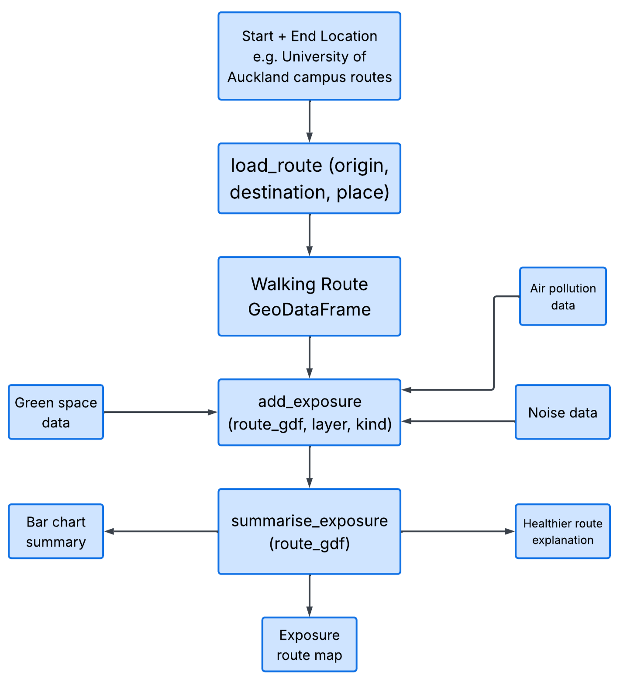
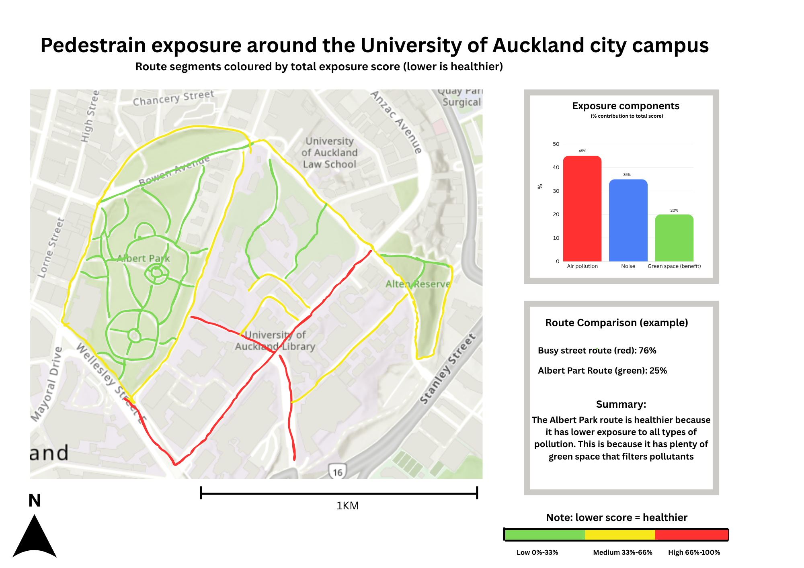

Design report: your-package-name
1 Problem statement
1.1 What problem does our package solve
This package seeks to understand pollution and which routes are the healthiest to walk in—specifically looking at the City to answer this question: which route is healthier for a walker on the Auckland University campus, and why?
This project aims to address growing concerns about the environmental impacts of transportation and pollution exposure in dense urban environments like Auckland’s CBD. According to Jovanovic et al. (2024), minimising travel time alone does not necessarily yield more environmentally friendly routes, as streets and areas differ in pollution and traffic levels that apps like Google maps, the AT app or other common mapping tools fail to recognize. As well as that, there are gaps in where the data is collected with most air quality information being collected at fixed points instead of statically done to improve reliability (El Arfaoui et al., 2026).
The package responds to broader urban issues, such as understanding how environmental conditions vary across short pedestrian journeys. Research on eco-routing has shown that optimal travel routes differ depending on whether travel time, emissions or pollution exposure are prioritised. Although most studies focus purely on vehicle emissions and traffic simulation rather than pedestrian and scale exposure within urban areas (Kwong et al., 2025). By combining walking routes with pollutants such as noise, greenspace, and air quality data, this package aims to provide concise information to the general public regarding complex environmental issues. The hope is that this data will raise awareness of people’s health in relation to pollution and how environmental exposure varies across urban landscapes.
1.2 Who will use it, and why
Our pedestrian-exposure package helps users compare walking routes around the UoA city campus by combining information about traffic noise, air pollution, and green space. The package is designed for anyone who wants to better understand which walking routes may provide a healthier walking experience.
2 Pipeline diagram
The package takes walking route data, air pollution data, noise data, and green space data, then turns them into a scored walking route around the University of Auckland city campus. Figure 1 shows how the package transforms raw route and environment data into the final map and summary.

3 Expected output
Figure 2 shows a rough estimate of the design’s final output. The package will produce a walking route map for the University of Auckland city campus and surrounding streets that students use to get to class. Each walking route will be coloured according to its total pedestrian exposure score; higher scores represent routes with higher exposure to pollution and noise.
The output combines three environmental exposure components: air pollution, noise, and green space. Allowing users to compare different walking routes around the campus and identify greener paths. For example, Albert Park or streets like Alfred Street may be greener and less polluted than routes near roads.
The final notebook output will include a small bar chart summarising the contributions of all pollutant types to the overall route score. It will also include a short summary statement explaining which route may be healthier and why.

4 Key design choices
- Study area: we focus on walking routes around the University of Auckland city campus because this is an area we can observe ourselves, and it has a mix of busy roads, quiet campus paths, and green spaces such as Albert Park
- CRS: we use EPSG:2193 (NZTM) because it works well for New Zealand data and lets us measure route length and nearby green space in metres
- Data pattern: the walking route will be fetched using OSMnx, while small example data can be saved inside the package for testing. This keeps the package easier to run and avoids relying on large files
- Exposure factors: we use noise, air pollution, and green space because these three factors help explain whether a walking route feels healthy, busy, or comfortable
- Time of measurement: we focus mainly on peak traffic hours because this is when pedestrians are likely to experience the highest levels of traffic noise and air pollution around campus. This also makes the route comparison more realistic for students walking to class during busy periods
- Scoring direction: a lower total exposure score means a healthier walking route. This makes the final map easier to understand because green can show lower exposure, yellow can show medium exposure, and red can show higher exposure
- Function structure: we keep the three main steps separate:
load_route()gets the walking route,add_exposure()adds the exposure information, andsummarise_exposure()creates the final score and summary - Trade-off: the score will be a simple estimate, not a perfect health measure. However, this makes the package easier to test, explain, and use within the assignment timeframe
5 Roles and next function
5.1 Monica
- Implementing
load_route()using OSMnx - Route mapping and visualisation
- Organising GeoDataFrames and CRS handling
- Writing parts of the design report and documentation
- Creating the final exposure route map
5.2 Lewis
- Implementing
add_exposure() - Attaching air pollution, noise, and green space data
- Cleaning and preparing environmental datasets
- Assisting with exposure scoring logic
- Supporting testing and debugging
6 References:
El Arfaoui, A., El Khaili, M., Chakir, I., Arif, O., Nhaila, H., Essamlali, I., & Tabaa, M. (2026). Towards Improving Air Quality Monitoring Using Fixed and Mobile Stations: Case of Mohammedia City. Sustainability, 18(6), 2944. https://doi.org/10.3390/su18062944
Jovanovic, A., Gavric, S., & Stevanovic, A. (2024). Evaluating Google Maps’ Eco-Routes: A Metaheuristic-Driven Microsimulation Approach. Geographies, 4(4), 732-752. https://doi.org/10.3390/geographies4040040
Lam, C. K. C., Alnaqshabandy, H., Lewin, S., Morewood, J., Xie, X., & Goodhew, S. (2025). Making intra-urban monitoring ‘a walk in the park’: A mobile monitoring approach for assessing pedestrians’ environmental conditions. Building and Environment, 113487. https://doi.org/10.1016/j.buildenv.2025.113487